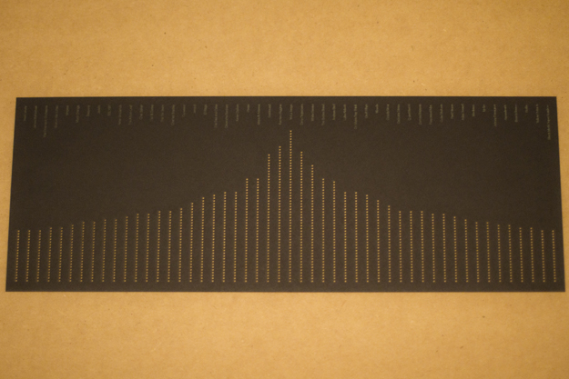

MFA IXD
Lampshade of Listening Habits
A lampshade incorporating laser-cut holes determined by personal listening habits.
As literature, music and film transition from physical objects to digital on-demand services, how might we consider translating the self-expression these objects represent back into our physical environments?
The lampshade was generated based on my last.fm listening data throughout 2012. The idea being that the final form is unique to the individual who creates it. The top 50 artists make up each column, the height of which is determined by the relative number of listens.
This individual project was conducted as part of Amit Pitaru‘s thesis class.